地政学
クラクフはポーランド南部の文化軸にあり、シレジア、カルパチア、ウクライナ方面、中央欧州の交通を結びます。首都ではありませんが、王都の記憶と大学の象徴性で国家の深層を支えます。国境の変化を覚える都市です。
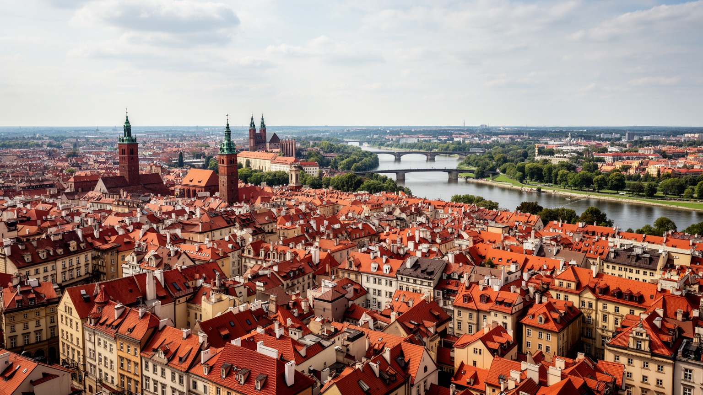
🇵🇱 ポーランド / 中央ヨーロッパ / World City Atlas
ポーランド王国の古都としての厚い記憶を抱え、大学、巡礼、観光、IT、医療、ユダヤ史、社会主義期の工業都市が重なる南部ポーランドの中心都市です。
都市の骨格
クラクフは旧市街とヴァヴェル城だけで完結しません。カジミエシュ、ポドグジェ、ノヴァ・フタ、大学地区、空港、郊外住宅地が、観光都市の奥にある生活圏と労働圏を見せます。
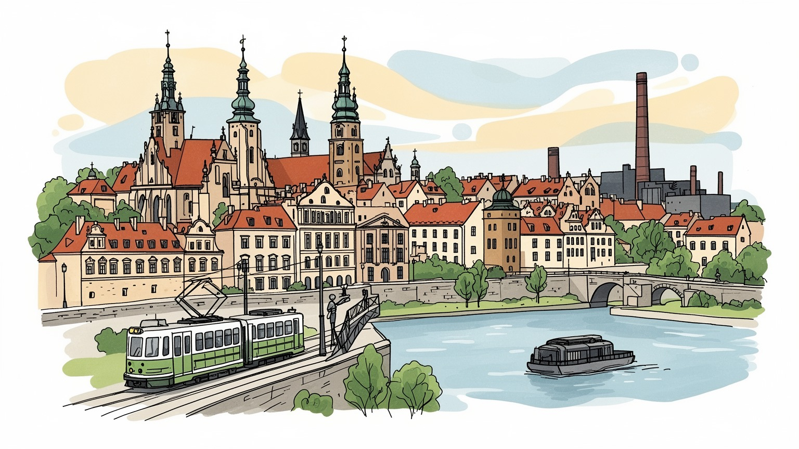
クラクフはポーランド南部の文化軸にあり、シレジア、カルパチア、ウクライナ方面、中央欧州の交通を結びます。首都ではありませんが、王都の記憶と大学の象徴性で国家の深層を支えます。国境の変化を覚える都市です。
観光、大学、IT、ビジネスサービス、医療、文化産業が雇用を支えます。ホテルや飲食、清掃、交通、建設の仕事も大きく、旧市街の華やかさの裏で、賃金、家賃、季節需要が暮らしを左右します。学生労働も多い都市です。
カトリックの儀礼、王陵、大学文化、ユダヤ人地区、文学、音楽、映画祭が重なります。ヨハネ・パウロ二世の記憶も強く、信仰は観光名所だけでなく、巡礼、家族行事、地域の祈りに息づいています。世俗文化も育ちます。
旅行者は城、中央広場、カジミエシュ、岩塩坑を巡りますが、住民はトラム、団地、大学、病院、市場、郊外鉄道を使って暮らします。観光の混雑と住宅費を調整することが、古都の論点です。静かな近所も守りたい都市です。
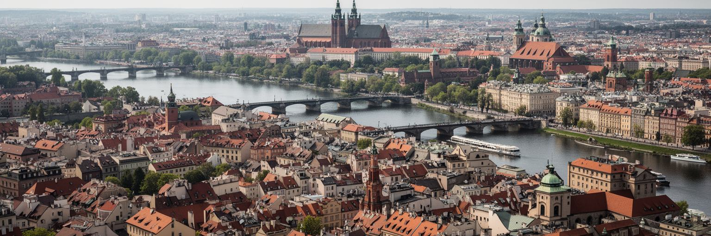
クラクフの地形を読む入口は、ヴィスワ川とヴァヴェルの丘です。川は旧市街、カジミエシュ、ポドグジェ、郊外住宅地を分けながら結び、橋、堤防、河岸公園、トラムの動線を通じて都市の距離感を作ります。ヴァヴェル城は丘の上から川を見下ろし、王権、教会、軍事、観光を一つの景観に集めます。旧市街は中世の市場広場を中心に密な徒歩圏を作りますが、現代の生活圏は川を越えて広がり、大学、病院、工場跡、住宅地、空港への道を含みます。河岸は散歩や自転車の場所である一方、洪水、護岸の維持、イベント利用、夜間騒音をめぐる調整の場所でもあります。石畳の中心部は写真に強い都市像を与えますが、住民には配送、救急、車椅子、ベビーカー、冬の凍結が具体的な問題になります。クラクフは美しい古都である前に、丘と川、橋と郊外が毎日の移動を決める実務的な都市です。川沿いの緑地や旧工業地の再利用が進むほど、観光客だけでなく学生、高齢者、家族が日常的に使える余白を残せるかが問われます。城から見る眺めと、早朝に橋を渡る通勤者の視線を重ねると、都市の骨格がより具体的に見えてきます。南部ポーランドの地形の中で、クラクフは記憶の高台と生活の低地を同時に抱える街です。冬の霧、夏の夕立と雨音、川辺の湿った石の匂いは、丘上と低地で違う都市の表情を作ります。
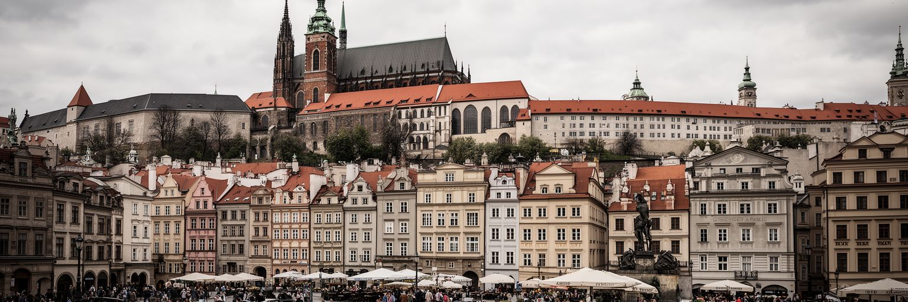
クラクフは現在の首都ではありませんが、ポーランド国家の記憶を預かる都市として特別な位置を持ちます。ヴァヴェル城と大聖堂には王権、聖職、軍人、詩人、政治指導者の記憶が集まり、王国、分割、占領、独立、共産主義、民主化を一続きの歴史として見せます。中央広場、織物会館、聖マリア教会、大学の講堂は、政治が行政庁舎だけでなく儀礼、交易、学問、宗教を通じて都市へ刻まれたことを示します。ワルシャワが近代国家の首都として動く一方、クラクフは古都として国家の由来を語る役割を持ち、追悼行事や国家的儀礼の舞台にもなります。ただし、王都の記憶は誇りだけではありません。ポーランド分割の時代、オーストリア支配、ナチス占領、戦後体制の変化は、街の建物や墓地、博物館に複雑な層を残しました。観光客が城を眺める時、その景色は美しい記念写真であると同時に、誰が国民として語られ、誰の経験が周縁に置かれてきたかを考える入口になります。クラクフを政治都市として読むには、省庁の数ではなく、象徴が集まる力と、それを現在の市民生活へどう開くかを見る必要があります。古い王都の権威が強いほど、移民、若者、少数者、労働者の声を公共空間へ入れる努力も重要になります。記憶は保存棚の中ではなく、広場の使い方、学校教育、追悼式、観光案内の言葉に毎日現れます。
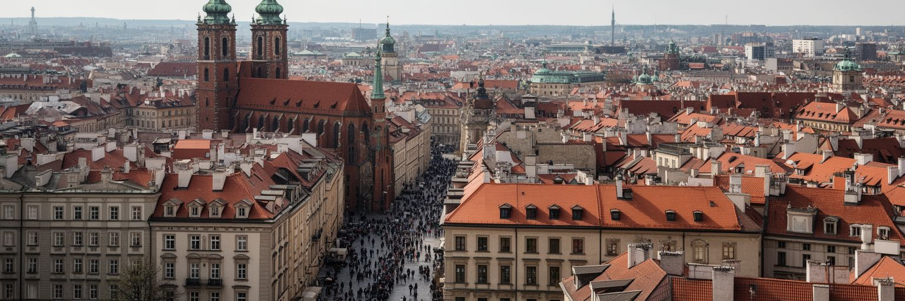
クラクフの現代経済を支える大きな柱は、大学と知識産業です。ヤギェウォ大学は中欧有数の古い大学として、神学、法学、医学、人文学、自然科学の伝統を持ち、街に学生、研究者、図書館、出版社、書店、カフェの厚い層を作ってきました。現在のクラクフにはAGH科学技術大学の工学人材も加わり、IT、ビジネスサービス、金融事務、ゲーム、研究開発、医療関連の雇用が集まり、英語を使う職場も多いです。これは若い人に機会を与え、ワルシャワや国外へ流れがちな人材を都市に引き留める力になります。一方で、国際企業のオフィスと観光サービスが同時に伸びることで、賃金差、家賃上昇、学生住宅の不足、長時間の通勤も生まれます。大学都市の自由な雰囲気は、専門職だけでなく、飲食、清掃、警備、配送、寮管理、図書館運営の労働によって支えられています。知識産業を語る時には、明るいオフィスや研究室だけでなく、生活費を払いながら学ぶ学生、郊外から通う若手社員、言語や国籍で職場が分かれる現実も見る必要があります。クラクフの強みは、歴史的な大学文化と現代のデジタル雇用が同じ徒歩圏に近いことですが、その近さが都市の公平性を自動的に保証するわけではありません。学ぶ場所、働く場所、住む場所をつなぐ公共交通と住宅政策が、知識都市の質を決めます。講義室から共同オフィスへ移る人の流れは、古都の新しい動力です。
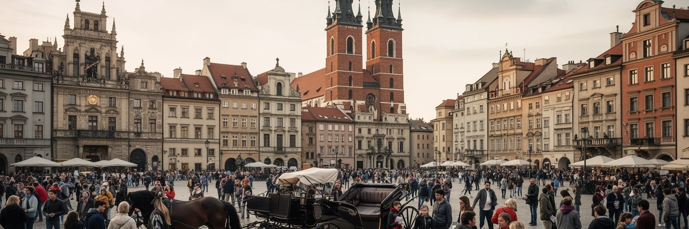
クラクフ旧市街は、中央広場、織物会館、聖マリア教会、バルバカン、大学建築、路地、地下展示が徒歩圏にまとまる、ヨーロッパでも強い観光吸引力を持つ中心部です。戦災による大規模破壊を免れた街並みは、連続した中世都市の感覚を残し、ポーランド観光の象徴になっています。観光はホテル、飲食、ガイド、交通、文化施設、土産物店に雇用を生み、建物修復の財源にもなります。しかし観光が強いほど、住民の生活は揺れます。短期賃貸、深夜の騒音、団体客の混雑、中心部の価格上昇、地元向け店舗の減少は、旧市街を暮らす場所から消費の舞台へ変えることがあります。馬車や広場のカフェ、ラッパの時報、屋台のオブヴァジャネックは絵になりますが、そこで働く人の労働条件、清掃、警備、公共トイレ、救急動線はあまり見えません。クラクフの観光を深く読むには、名所を回る楽しさと、毎朝広場を整える人、家賃で転居する住民、近隣の学校へ通う子どもを同じ場面に置く必要があります。遺産を守るとは、建物の外観を凍結することだけではなく、日常の買い物、住まい、静かな夜、地域の会話が残る条件を整えることでもあります。観光収入を地域へ戻し、混雑を分散し、住民が中心部を避けずに使えるようにすることが、古都を生きた都市として保つ鍵になります。美しい広場は、生活の権利と一緒に守られてこそ価値を保ちます。
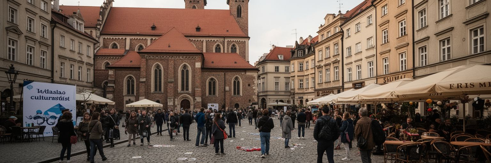
カジミエシュは、クラクフを世界史の中で読むために欠かせない地区です。かつてユダヤ人共同体が厚く暮らし、シナゴーグ、学校、墓地、市場、工房、家庭の生活が重なっていました。ナチス占領とホロコーストはこの共同体を破壊し、近くのポドグジェのゲットー、プワシュフ強制収容所跡、オスカー・シンドラーの工場博物館は、都市が暴力の制度に組み込まれた記憶を伝えます。今日のカジミエシュはカフェ、バー、ギャラリー、映画、クレズマーの夜、ユダヤ文化フェスティバルでにぎわいますが、その活気は失われた生活の上に成り立つため、扱いには慎重さが必要です。ユダヤ文化を単なる雰囲気や装飾として消費すれば、追悼の重みは薄れます。一方で、記憶を閉じた悲劇として固定するだけでは、学びや対話の場も狭まります。クラクフを歩く人は、シナゴーグの保存、墓地の静けさ、プラツ・ノヴィのザピェカンカ屋台、地元住民の生活、研究者やガイドの語りを同じ地図に置くべきです。記憶の地区は、誰が語る権利を持ち、誰が利益を得て、誰が沈黙してきたかを問い続ける場所でもあります。近年の再開発と人気化は建物を修復する一方、家賃上昇や商業化も進めます。カジミエシュの価値は、古い共同体の痕跡を尊重しながら、現代の住民が軽んじられない都市環境を作れるかにかかっています。路地のにぎわいの奥に、追悼と日常が同時にあります。
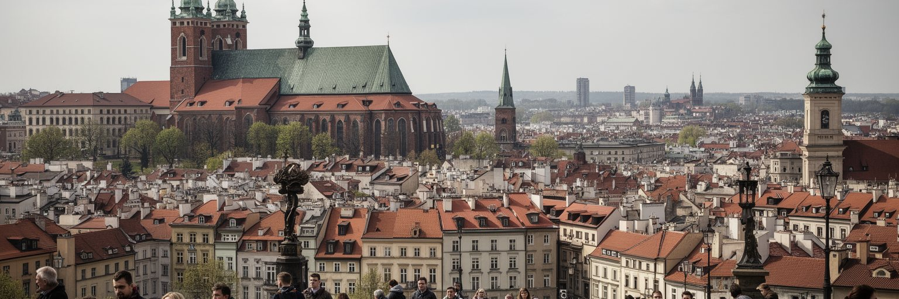
クラクフはカトリックの都市としての存在感が強く、教会の鐘、祝祭、巡礼、墓参、家族行事が都市の時間を作ってきました。ヴァヴェル大聖堂や旧市街の教会は観光名所であると同時に、祈り、追悼、国家儀礼、地域の結びつきの場です。クラクフ大司教を務めたカロル・ヴォイティワ、のちのヨハネ・パウロ二世の記憶は、都市と世界のカトリックを結び、近郊の聖地や巡礼ルートにも影響を与えています。信仰は荘厳な建築だけでなく、路面電車でミサへ向かう高齢者、若者の巡礼、教会の慈善活動、学校や病院、家庭の儀礼にも現れます。ただし、宗教が都市の中心にあることは、社会の多様化や世俗化、少数者の権利、政治との距離をめぐる議論も生みます。クラクフを宗教都市として読むには、カトリックの深い根を尊重しつつ、ユダヤ史、現代の移民、無宗教の住民、観光客の視線を同じ街に置く必要があります。宗教建築は美しい景観である前に、共同体の記憶と葛藤を受け止める場所です。大きな祝祭の日に中心部が巡礼者で満ちる時、都市は祈りと交通管理、警備、清掃、商業を同時に動かします。信仰の力が公共空間を温かくする場合もあれば、誰かを外側へ押し出す場合もあります。その両方を見ることが、クラクフの宗教的な厚みを理解する近道です。祈りの場所が観光消費だけに飲み込まれない工夫も必要です。
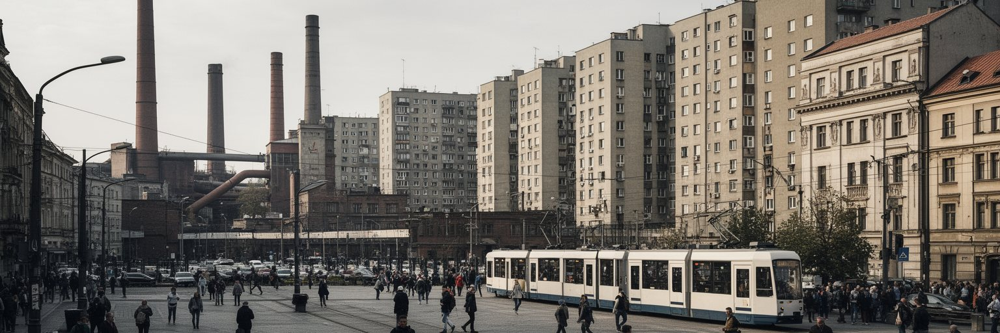
クラクフの物語を旧市街だけで終わらせないためには、ノヴァ・フタを見る必要があります。第二次世界大戦後に社会主義国家が建設した大規模な工業都市で、製鉄所、広い街路、集合住宅、広場、労働者の文化施設が計画的に置かれました。王都であり教会都市でもあるクラクフのそばに、労働者階級の新しい都市を作るという政治的意図がありましたが、ノヴァ・フタは単なる体制の展示物ではありません。多くの住民が暮らし、働き、子どもを育て、教会建設や労働運動を通じて国家と交渉してきた生活の場所です。社会主義期の集合住宅は画一的に見られがちですが、緑地、中庭、学校、商店、トラムの近さは今も生活基盤になります。重工業の縮小や再編は雇用を変え、環境負荷、技能の継承、若者の流出、地区イメージの課題を残しました。一方で、ノヴァ・フタは近年、建築散歩、文化施設、地区再生の対象にもなっています。重要なのは、工業遺産を観光的な珍しさとしてだけ扱わず、そこで働いた人の誇り、病気、賃金、家族の時間を含めて読むことです。クラクフの古都性は、ノヴァ・フタの存在によってより複雑になります。城と製鉄所、聖堂と集合住宅、観光と労働を一緒に見ることで、都市が一枚の絵ではなく、異なる時代の社会実験を抱えた場所であることが分かります。トラムで中心部と結ばれる距離の近さも、その対比を日常化しています。
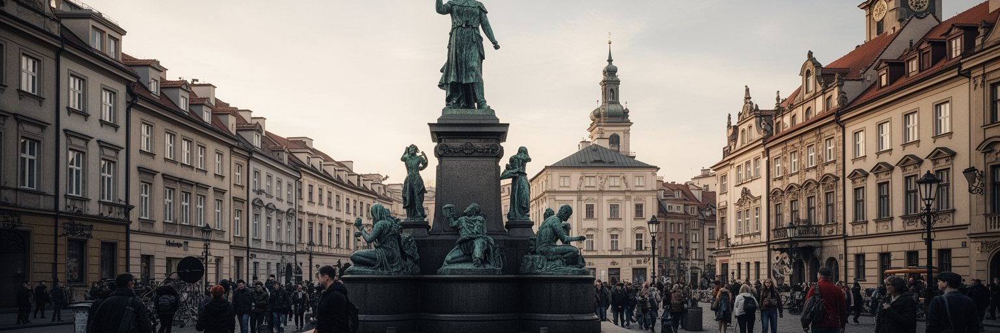
クラクフは、周辺地域の重い記憶と切り離せません。ポドグジェのゲットー跡、プワシュフの収容所跡、シンドラー工場博物館は、市内に残る占領と迫害の痕跡です。さらに日帰り圏にはアウシュヴィッツ・ビルケナウがあり、多くの旅行者はクラクフを拠点にホロコーストの現場へ向かいます。ヴィエリチカ岩塩坑の世界遺産も近く、観光ルートは華やかな旧市街、産業遺産、戦争記憶を短い距離で結びます。この近さは便利さであると同時に、記憶を消費へ変えてしまう危うさも持ちます。悲劇の場所を訪れることは、写真を撮るためではなく、国家、官僚制、差別、隣人関係、暴力の制度化を考えるためでなければなりません。クラクフのホテルやガイド、交通会社は、この記憶観光を支える産業でもありますが、語りの質、沈黙への配慮、犠牲者と生存者の尊厳が常に問われます。戦争記憶は過去の出来事ではなく、現在の排外主義、反ユダヤ主義、難民への態度、歴史教育に直結します。街の美しさに惹かれて来た人が、周辺の記憶に触れることで、都市の評価は深くなります。クラクフを読むことは、旧市街の保存だけでなく、暴力を生んだ社会の仕組みを忘れない公共性を読むことでもあります。観光都市としての成功が、記憶の軽量化につながらないようにする責任があります。追悼は静かな行為ですが、都市の倫理を形づくる力を持っています。
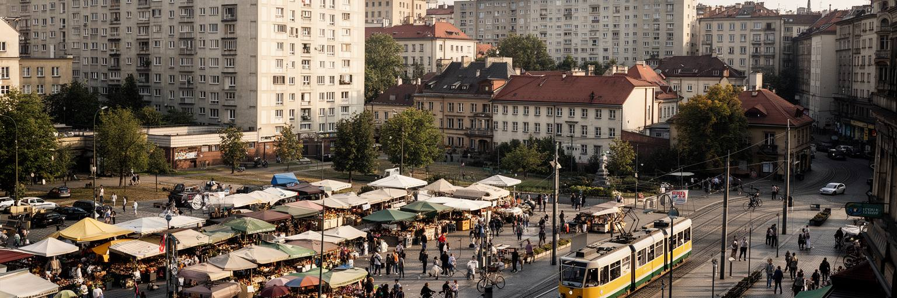
クラクフの日常生活は、旧市街の外へ広がる住宅地、学生寮、団地、郊外の新築住宅、地域市場、学校、病院、トラム停留所にあります。中心部は観光と大学の魅力が強い一方、短期賃貸、投資用住宅、学生需要、専門職の流入によって家賃が上がりやすいです。若い家族や低賃金のサービス労働者は、中心から離れた地区や周辺自治体へ住まいを探すことになり、通勤時間と交通費が生活を左右します。社会主義期の集合住宅地は単調な景観として語られがちですが、店舗、公園、学校、医療、公共交通が近ければ、子どもや高齢者にも安定した生活基盤になります。古い建物の断熱、暖房費、冬の空気汚染、駐車場不足、歩道の安全は、観光地図には出にくい日常の論点です。クラクフを生活都市として読むには、中央広場の美しさだけでなく、朝のパン屋、夜のトラム、大学近くの賃貸広告、スタリ・クレパシュ市場の買い物、病院の待合室を見る必要があります。都市の魅力を支える人が住めない街になれば、観光も文化も長続きしません。住宅政策、公共交通、学生向け住まい、保育、近所の商店を一体で考えることが、古都を住み続けられる場所にします。中心部の保存と郊外の生活条件は別々の問題ではありません。住む場所を選べる余地が、都市への愛着と社会的な安定を支えます。日常の便利さが整ってこそ、歴史的な景観も市民のものとして残ります。
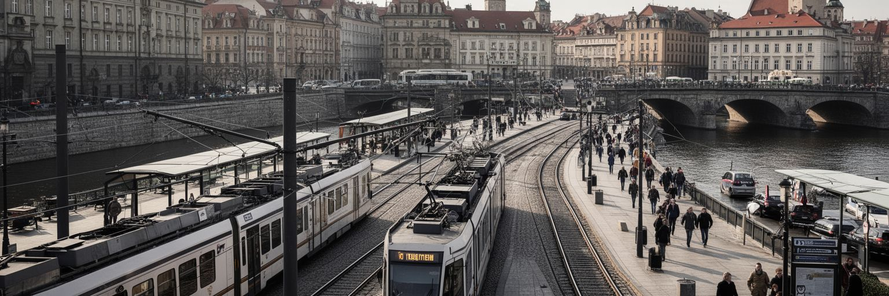
クラクフの交通は、徒歩で巡れる旧市街と、広域へ伸びる鉄道、空港、トラム、バスの組み合わせで成り立ちます。中央駅はワルシャワ、カトヴィツェ、ヴロツワフ、プラハ方面、ザコパネや南部の観光地へ向かう入口で、駅前の商業施設と旧市街が近いことも都市の使いやすさを高めています。トラムは旧市街周辺、カジミエシュ、ポドグジェ、ノヴァ・フタ、住宅地を結び、自動車を中心部へ入れすぎないための重要な骨格です。空港は欧州各地と結ばれ、観光、留学、ビジネスサービス、移民の往来を支えます。一方で、観光客の増加、郊外化、自動車交通、駐車需要、大気汚染、冬の道路管理は交通政策の負担になります。中心部を歩きやすく保つには、物流、高齢者、障害者、子ども連れ、夜勤者の移動を同時に考える必要があります。クラクフの交通を読むには、旧市街を歩く快適さだけでなく、早朝の郊外バス、空港へ向かう学生、ノヴァ・フタから中心へ通う労働者、週末に山へ向かう家族を同じ地図に置くことが大切です。公共交通の分かりやすさと運賃、乗り換えの安全、駅周辺の歩行者空間は、都市の公平性に直結します。交通は観光を運ぶ装置である前に、住民の時間を守る制度です。南部ポーランドの結節点として、クラクフは小さな古都ではなく、広域の通勤と旅行を受け止める実務的な都市でもあります。
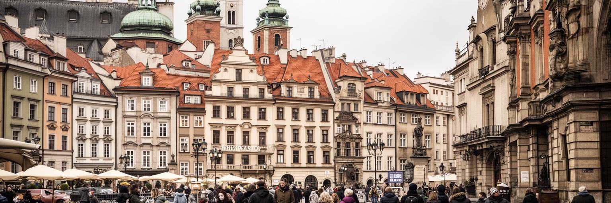
クラクフの文化生活は、王都の記念碑だけでなく、市場、パン屋、ミルクバー、カフェ、学生の食堂、劇場、映画館、書店にあります。中央広場周辺のカフェは観光客に人気ですが、都市の食の記憶は、オブヴァジャネック、ピエロギ、ジュレック、家庭料理、地区市場、大学近くの安い食堂にも宿ります。カジミエシュではユダヤ文化の記憶と現代のバー文化が重なり、文学祭、映画祭、音楽イベントは、古都を静かな博物館にしない力を持ちます。ポーランド語の詩や演劇、独立系書店、学生の議論、教会音楽、クラブの夜、地元ラジオやSNSの街情報は、都市の表現を複数の世代へつなぎます。ヴィスワ・クラクフとクラコヴィアの試合日は、スポーツが地区の誇りと緊張を見せる場にもなります。一方で、文化が観光商品として売られるほど、演奏家、厨房、配膳、清掃、警備、翻訳、案内の労働は見えにくくなります。中心部の店は家賃と観光需要に左右され、昔からの住民が使える価格帯の食堂が減ることもあります。クラクフの食と文化を読むには、有名な店や祭りだけでなく、誰が仕込みをし、誰が舞台を支え、学生がどこで安く食べ、住民がどこで休めるのかを見る必要があります。文化都市の厚みは、華やかなイベントの数ではなく、日常の会話と休息の場所が残るかに表れます。観光客向けのにぎわいと近所の静かな時間が共存できれば、都市の味は一方的な商品になりません。
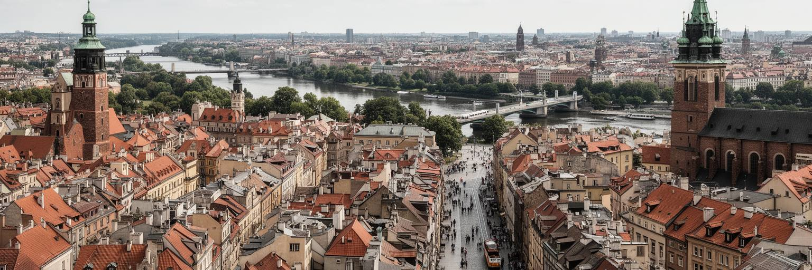
クラクフを読むことは、旧市街とヴァヴェル城の美しさを、大学、宗教、観光労働、ユダヤ史、ノヴァ・フタ、住宅、交通、気候の現実と重ねることです。王都の記憶は国家の深い物語を伝えますが、都市は過去の展示だけで動いているわけではありません。学生と研究者は知識産業を支え、ホテルや飲食の労働者は観光を支え、トラムと郊外住宅地は毎日の通勤を支えます。カジミエシュと周辺の戦争記憶は、都市の魅力を軽く消費することへの警告でもあります。カトリックの巡礼とユダヤ史、社会主義期の工業都市と現代のITオフィス、旧市街の保存と家賃上昇は、矛盾ではなく同じ都市の層です。クラクフの重要性は、経済規模だけでなく、中央ヨーロッパの歴史が歩ける距離に凝縮され、その中で住民が普通の生活を続けている点にあります。観光客の満足、記憶への敬意、住民の住まい、労働条件、公共交通、若者の機会をどう両立するかが、古都の未来を左右します。城から川を見下ろす視線と、ノヴァ・フタから中心へ向かうトラムの視線を合わせると、都市の評価はより具体的になります。クラクフは完成した絵葉書ではなく、記憶と生活が毎日交渉している都市です。その交渉を見ながら歩くことで、古都の美しさはより深く、より現実的に理解できます。歴史を守ることは、そこで働き住む人の時間を守ることでもあります。